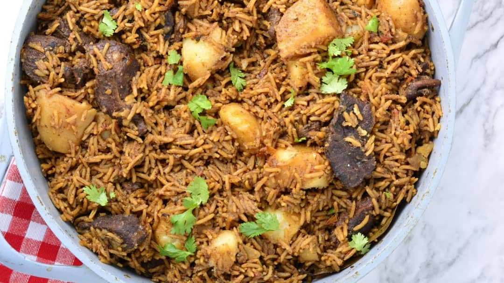

How to Cook Pilau
Details on how to cook Pilau...
Details on how to cook Pilau...
Ingredients:
- 1 cup basmati rice
- 1 tablespoon cooking oil- 1 bay leaf
- 1-2 cloves
- 1-2 cardamom pods
- 1 small cinnamon stick
- 1 teaspoon cumin seeds
- 1 teaspoon coriander powder
- 1 teaspoon turmeric powder
- 1 small onion, finely chopped
- 2 cups water
- Salt to taste
1. Rinse the rice until the water runs clear.
2. Heat oil in a pot, add the bay leaf, cloves, cardamom pods, cinnamon stick, and cumin seeds. Sauté for a minute.
3. Add the chopped onion and cook until golden brown.
4. Stir in the coriander powder, turmeric powder, and salt.
5. Add the rinsed rice and mix well.
6. Pour in the water and bring to a boil.
7. Reduce the heat to low, cover, and cook for about 15 minutes or until the rice is tender and the water is absorbed. Fluff with a fork.
